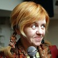

Макс Фрай – литературный псевдоним, объединяющий двух авторов – одесситов Светлану Мартынчик и Игоря Степина. Также Макс Фрай – главное действующее лицо и рассказчик в их самых блистательных сериях произведений. Макс Фрай – обладатель премий «Зиланткон», журнала «Мир Фантастики» и «Серебряная стрела». Светлана Мартынчик, писательница и художница, родилась 22 февраля 1965 года в Одессе, но потом вместе с отцом, трудящимся военным музыкантом, переехала в Германию, где прожила до девяти лет. Вспоминает о годах, проведенных в стране, с теплотой. По приезде на родину Светлана долго не могла адаптироваться – Россия воспринималась ею как место культурного и социального застоя, место, не совместимое с творчеством.